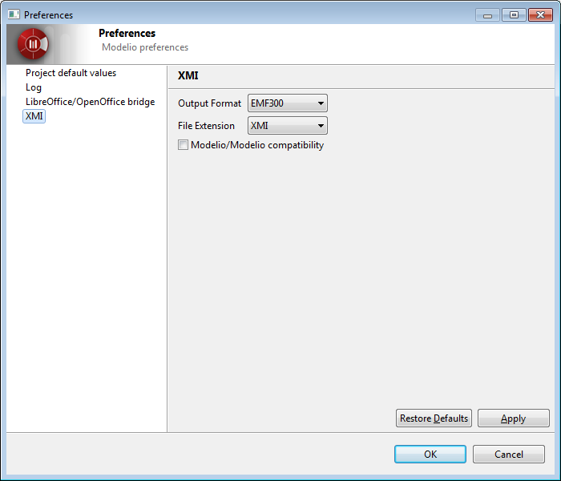

Modelio XMI parameters are used to modify the import and export behavior of the generator.

| Parameter | Use |
|---|---|
| Output format | Used to choose between a file compatible with the EMF 3.0.0 specification or the UML 2.1.1, UML 2.2, UML 2.3 or UML 2.4.1 specifications from the OMG. |
| File extension | Specifies the extension given to exported files (".xmi" or ".uml"). |
| Modelio/Modelio compatibility | Specifies whether or not maximum compatibility is activated when a re-import operation is run in Modelio. |